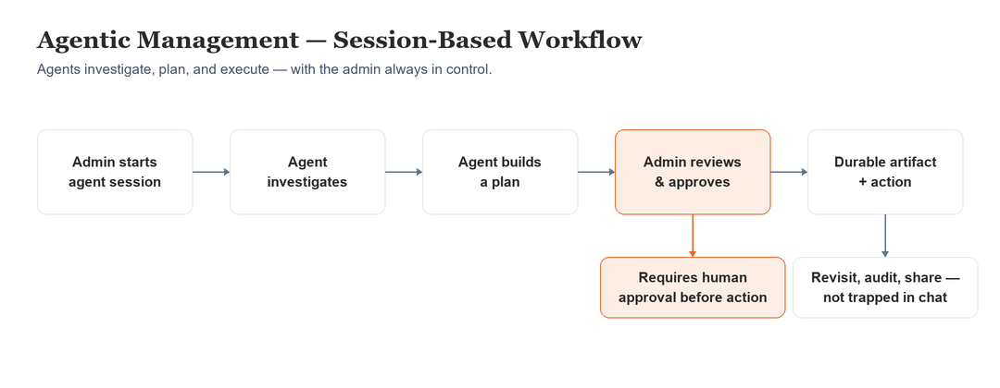
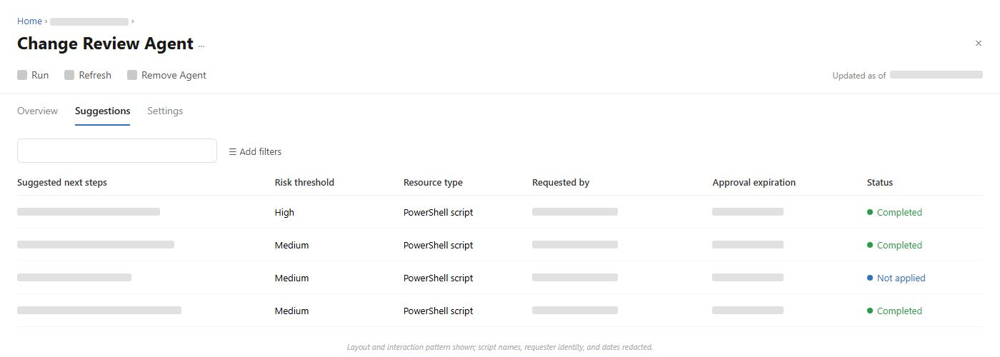
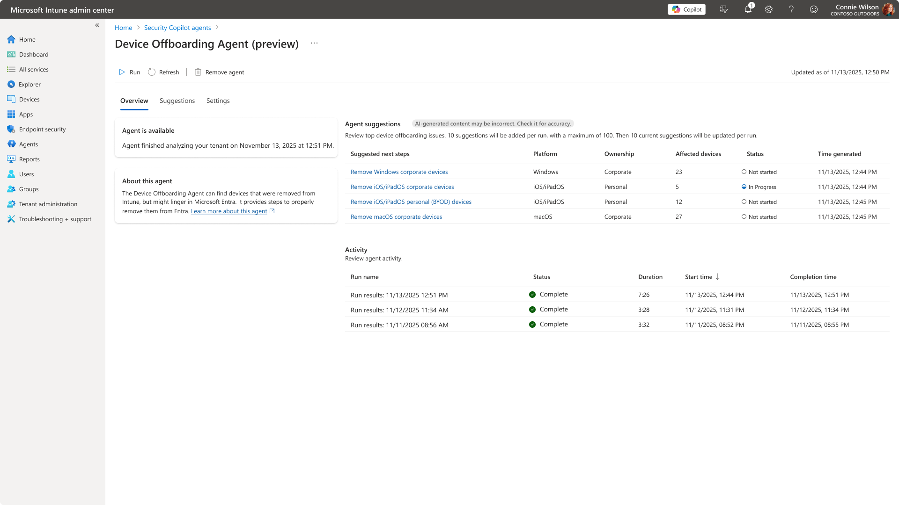

A multi-year arc: from managing individual agents to coordinated agent systems
Connected projects tell one story — bringing agents into Intune as a managed system, going deep on a flagship agent, extending that thinking into a broader multi-agent security system, and grounding it all in foundational, fully-led product work: the admin UX for Windows 365 / Cloud PC.
Agents as a Managed System
Admins manually investigated and coordinated remediation across disconnected consoles — spending more time coordinating than solving problems.
Agents investigate, build durable plans, and present actionable recommendations while keeping the admin firmly in control.
Problem
Bringing agents into Intune raised a foundational design question: what does it mean to design agents as a category of Intune functionality — not one-off features, but a system that needs to be introduced, permissioned, governed, and managed at scale? Multiple agents were in motion at once — Policy Configuration, Vulnerability Remediation, Change Review, and Device Offboarding — each with different scope, timelines, and levels of readiness.
My Role
Principal Product Designer leading experience strategy and interaction design for agentic administration across Intune. Defined the conceptual and interaction model for agents as a class of Intune functionality, spanning agent management, permissions & access, output surfaces (standalone artifacts and inline/in-context), and Responsible AI considerations. Led design end-to-end for the Vulnerability Remediation Agent and drove design strategy across the broader agent portfolio. Bridged the SFE/design-system team and the Intune product team throughout — both consuming shared components and driving new agent-specific patterns back into the shared system.
Considerations
- Customer needs — admins wanted agents to reduce coordination overhead without losing control or visibility; trust in why an agent recommended an action mattered as much as the action itself.
- Business objectives — establish a credible, coherent agentic-AI foundation in Intune, with reusable patterns so agent work wouldn’t each start from zero — and could scale or contract as agent priorities shifted.
- Technical constraints — multiple agents, different teams, different levels of maturity, all needing to feel like one coherent, governable system while the underlying design system was still evolving alongside the work.



Multiple shipped Intune agents (Change Review, Device Offboarding, Policy Configuration, Vulnerability Remediation) reuse the agent framework and interaction patterns I led — published by Microsoft (learn.microsoft.com/intune/copilot/agents). Evidence of pattern adoption across teams; my contribution is the design system, not the pixels.
CVE Vulnerability Remediation Agent
Security teams found problems; IT teams manually translated them into fixes — slow, fragmented, coordination-heavy.
The agent converts vulnerability intelligence into remediation plans, ready for administrator review and approval.
Problem
A single CVE requires understanding risk, identifying affected devices, creating deployment groups, choosing a strategy, and deploying — usually stitched together by hand across security and IT teams.
My Role
Lead UX for the Vulnerability Remediation Agent — design owner across Public Preview and GA planning, applying the permissions, output, and RAI framework established above to a specific, high-stakes scenario. Led the Intune agent demo for the first public showcase of Security Copilot Agents to the press (RSA).
Considerations
- Customer needs — security and IT teams needed a faster path from “here’s a CVE” to “here’s what to do about it,” without losing the ability to review and control what actually deploys.
- Business objectives — prove out the agent framework on a concrete, high-value scenario; establish credibility for Intune’s agentic-AI direction with a flagship example.
- Technical constraints — CVE remediation spans risk assessment, device targeting, and deployment — each with different data sources and different levels of automation that could safely be offered at MVP.


Shipped feature, published by Microsoft — learn.microsoft.com. Shown as reference for the shipped experience; my contribution is the interaction design and flows, not the raw pixels.
Extending Agents Into a Coordinated, Multi-Agent System
Agentic thinking focused on individual agents handling individual tasks, each governed on its own.
Specialized agents coordinated in teams, sharing context, working together toward a security outcome — with the admin directing and approving at key checkpoints.
Problem
The agent-by-agent model raised the next question: what happens when agents need to work together, coordinating across roles rather than operating as isolated tools? Early thinking explored an interaction model, governance patterns, and durable-artifact approach for a multi-agent system spanning security workflows — building on security-wide agent patterns rather than any single product’s approach.
My Role
Contributed early, foundational design work on the interaction model and design direction for what became Project Perception — applying and extending security-wide agent patterns into a coordinated multi-agent system: specialized agent teams (investigation, analysis, remediation) working through orchestrated playbooks, with chat as a natural-language entry point and approval checkpoints throughout. Also designed new patterns to address scale and monitoring challenges specific to Intune’s agent volume, and pushed those patterns back up into the security-wide pattern library — the same two-way bridging approach used with the SFE/design-system team on the Intune agent work.
Considerations
- Customer needs — security teams needed coordinated defense, not more disconnected point tools; admins still needed to trust and control what agents did on their behalf, now multiplied across a team of agents instead of one.
- Business objectives — establish a credible agentic-AI security direction ahead of a fast-moving threat landscape, building on established security-wide agent patterns rather than starting over.
- Technical constraints — coordinating multiple agent types (investigation, analysis, remediation) sharing context and handing off work, while keeping the system auditable and governable end-to-end.
Project Perception publicly launched to preview in August 2026 — learn.microsoft.com. Shown as reference for the direction this foundational work fed into; specific screens and decisions above reflect my own contribution, not the full shipped product.
Windows 365 / Cloud PC — Provisioning, Health & Shared Cloud PCs
A brand-new virtualization product with no established admin model — fragmented provisioning, confusing navigation, and no way to see whether Cloud PCs were healthy.
A coherent admin experience: guided provisioning, a Cloud PC health dashboard, shared/Frontline Cloud PCs, and navigation that matched how admins actually think.
Problem
Windows 365 introduced Cloud PCs into Intune with no precedent for how admins would provision, assign, monitor, and troubleshoot them. Research showed admins confused Windows 365 / Microsoft 365 / Office 365, and treated provisioning as separate from ongoing management.
My Role
Design lead for the Intune-based Cloud PC admin experiences and Design Owner for Windows 365 Frontline (later Flex) shared Cloud PCs — from early pre-launch through Private Preview and GA. Partnered with PMs Sam Tulimat, Christiaan Brinkhoff, and Colby Hanley; content by Kay Jorgensen; research by Abena Edugyan.


Shipped Windows 365 management experiences, published by Microsoft — learn.microsoft.com/windows-365. Reference for the shipped admin surfaces; my contribution is the design of these management/health experiences, not the raw pixels. Use only Microsoft-published screens or abstractions you recreate — never internal or unreleased UI.
Honest scope note: strongest as admin & management UX in Intune, not broad end-user client design; hard quantitative outcomes weren’t tracked, so it’s framed by role, decisions, and shipped surfaces.